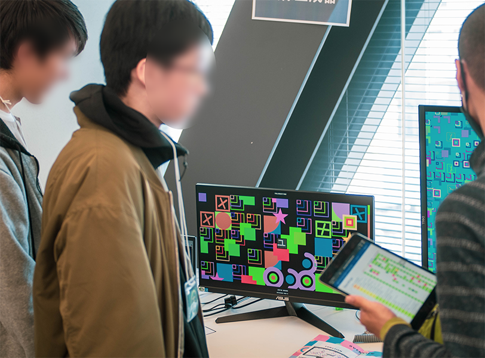
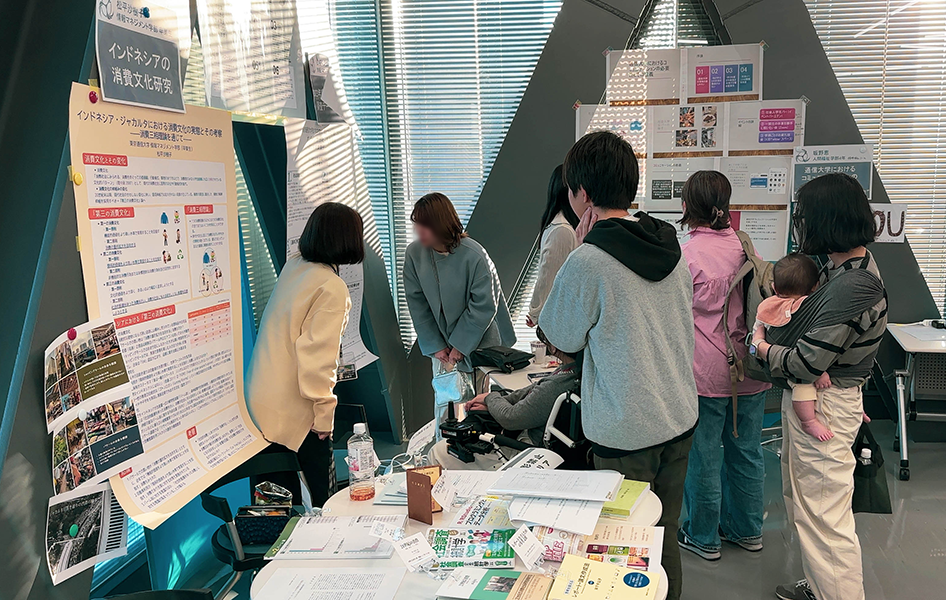
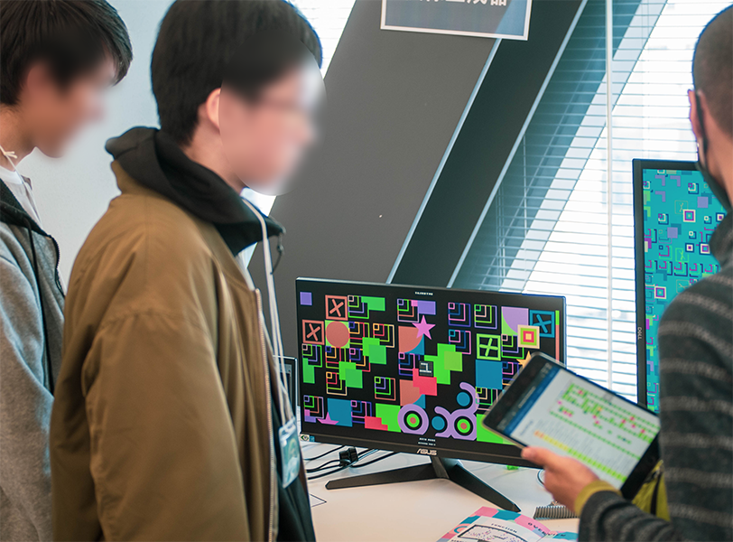
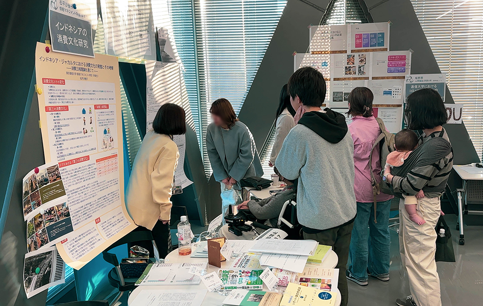

『模様生成器』
WEBサイト上で動作する、シンプルな図形の組み合わせの模様を生成できる装置を作成しました。 2025/2/8 リサーチレポート報告会にて発表したもので実機を展示いたします。 デザインツールの専門知識がなくても直感的に色々な模様を作成できるよう工夫してます。 本展示では実機を触っていただき気に入ったものをプリントアウトできるように用意しようと思ってます。 あと小冊子を配布します！
開催
2024年度の「@ディスカバリー」は、東京通信大学の学生が自主的に企画・運営した、学びと研究の発表イベントの第1回として開催されました。 卒業式を前に、4期生の中島さんをはじめとする先輩方が中心となり、もともとは科目『リサーチレポート』の発表機会として企画されたものです。 しかし準備を進めるなかで「展示会もやってみたい！」という声が上がり、自由な発想が次々に集まった結果、発表会にとどまらない、当初の構想を超える盛り上がりとなりました。
WEBサイト上で動作する、シンプルな図形の組み合わせの模様を生成できる装置を作成しました。 2025/2/8 リサーチレポート報告会にて発表したもので実機を展示いたします。 デザインツールの専門知識がなくても直感的に色々な模様を作成できるよう工夫してます。 本展示では実機を触っていただき気に入ったものをプリントアウトできるように用意しようと思ってます。 あと小冊子を配布します！
会議の内容を絵や図で視覚的に示しながら記録していくグラフィックレコーディング（グラレコ）という手法があります。内容を視覚化するとイメージを他者と共有しやすくなり、コミュニケーションを促進し、思考が深まると言われています。このコーナーでは、グラレコをきっかけに1年間にわたって授業ノートを視覚的に描くことを試みた取り組みを紹介します。描いた絵を研究のため「一枚絵」と名付けました。展示では授業ノートだけでなくいろいろな一枚絵を見ていただき「ビジュアライズが人間の思考に何をもたらすのか」を考えるきっかけにしていただければと思います。
東京通信大学では、斉藤先生主催のClusterを使ったVRイベントが定期的に開催されています。 これはPCやスマホ・タブレットを使用しても参加できますが、メタバースの良さが半減してしまいます。 そこで、カメラを使用してモーションキャプチャで気軽に参加できるシステムを作りました。 また、Meta Questを使用したVRゴーグルでの体験も予定しています。 初めての方も、Cluster経験者の方も、お気軽に参加してみてください。 Clusterやメタバースへ興味を持っていただけたり、それぞれの感想を聞かせてもらえると嬉しいです。 当日はClusterで作成したワールドも公開していますので、オンラインからの参加も大歓迎です。 ※参加方法はClusterにログイン後、『東京通信大学』で検索して『ハブワールド』にお越しください。
東京通信大学では、斉藤先生主催のClusterを使ったVRイベントが定期的に開催されています。 丸山満里奈（情報マネジメント学部4年）、于融世（情報マネジメント学部4年）、世古鈴奈（人間福祉学部4年）、土屋陽介先生、のメンバーで子供の睡眠をサポートするオコジョ型ロボットを開発しました。 盛岡で行われたRSNPコンテスト2024では「グッドコンセプト賞」を受賞することができました。 今回の展示会ではオコジョ型ロボットをお披露目します。実際に触れ合ったり、動いている様子をみることができます！
学生生活で企画してきた「社会人学生バー」「１期生を勝手に祝う会」「毎学期ごとのスペースにて行ったお疲れ様会」などを元に学生同士の交友がもたらす効果や重要性を考察します。そして会を行っている自分自身の変化があり、福祉の勉強をしていく中でこれは「ヘルパーセラピー」に精通すると感じ考察していきたいです。会の様子がわかる写真なども載せるのでみていただけると幸いです。
「チ。-地球の運動について-」は漫画家・魚豊原作の地動説を命がけで研究者たちとそれを取り巻く人々の群像劇です。この作品を通じ学びについて考えました。 自分の4年生の自主研究についても展示します！
応用プログラミングIの“役に立たないモノ”を企画・制作するという課題の成果物です。 無骨なボディながらも、滑稽な動きをする様を眺めてみてください笑 WebプログラミングIで制作したJavaScriptのWebゲーム「イカでインクぬりゲーム」も持参予定です。
産業革命以降、大量生産・大量消費を経て消費文化は多様化している。 今も経済成長を続ける新興国のひとつ、インドネシアではどのような消費文化がみられるのだろうか―そのようなリサーチクエスチョンのもと、3つの文化を取り上げ、消費理論と照らして研究をしたのが、2023年度リサーチレポート「インドネシア・ジャカルタにおける消費文化の実態とその考察―消費三相理論を通じて―」です。 インドネシアの文化を少しでも感じていただけたら幸いです。
「インターネットと社会」をテーマに、東京通信大学の学生を対象として2023年度に実施したWeb調査データの一部を使って分析し、展示します。 調査データから統計分析してわかる東京通信大学生の傾向について興味がある方や、「社会調査演習」がどのような科目なのか知りたい方もぜひお立ち寄りください。 ご来場の皆さんの素敵な学びの「発見」の場所になれば嬉しいです。
HCIとはヒューマンコンピュータインタラクションの略で、人間とコンピュータがよりよく付き合っていくことを研究する分野です。その中から最近話題の生成AIを取り上げ、藤井先生の生成AIに関する講義を聞きながら、参加者の皆さんでビジュアライズ（視覚化）しながら楽しく一枚絵を描きました。
※一枚絵は黒河内さんの研究テーマであり、指導教員の立場としてその実践の機会として企画されました

 


